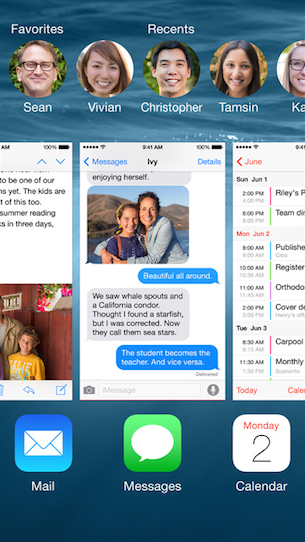
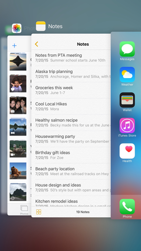

Multitasking
Switch Between Apps
iOS allows you to switch instantly between apps and to resume an app. When you return to an app, you can pick up right where you left off. Multitasking doesn't slow the performance of the foreground app or drain battery life unnecessarily.
|

|

|
iOS 8 on iPhone |
iOS 9 on iPhone |
Use Multitasking on iPad
In addition to switching between apps, you can use two apps at once, or answer emails while watching a video on iPad.
iOS 9 on iPad
The following multitasking features operate tasks in the background while preserving performance, battery, and data security:
- Fast app switching: Switch between apps without returning to the Home screen.
- Background audio: Continue listening to audio or talking on the phone while you use other apps.
- Background location: Apps that use location services continue to track your location in the background.
- Local notifications: Receive notifications from other apps.
- Task completion: Longer tasks, such as uploading photos, finish in the background while you use other apps.
It is extremely common for Apple customers to habitually close apps from the app switcher, believing that it will save battery life or other resources. Some AppleCare Advisors even encourage this practice. It is unnecessary; iOS manages resources and power consumption very well. Advisors should recommend using this step only when an app has stopped responding, or another troubleshooting resource recommends it.
Practice
Using an iOS device, complete these steps to try multitasking:
- Tap the Stocks app to open it.
- Press the Home button to close the Stocks app.
- Tap the Weather app to open it.
- Double-click the Home button to see preview screens of the apps you have open.
- Tap the Stocks preview screen to open it.
- Double-click the Home button again.
- Swipe up on the Weather app preview screen to quit the app.
- Press the Home button to return to the Stocks app.
- Press the Home button again to return to the Home screen.
To reference information about multitasking after training, refer to knowledge base article HT202070, "About Multitasking on your iPhone, iPad, and iPod touch".